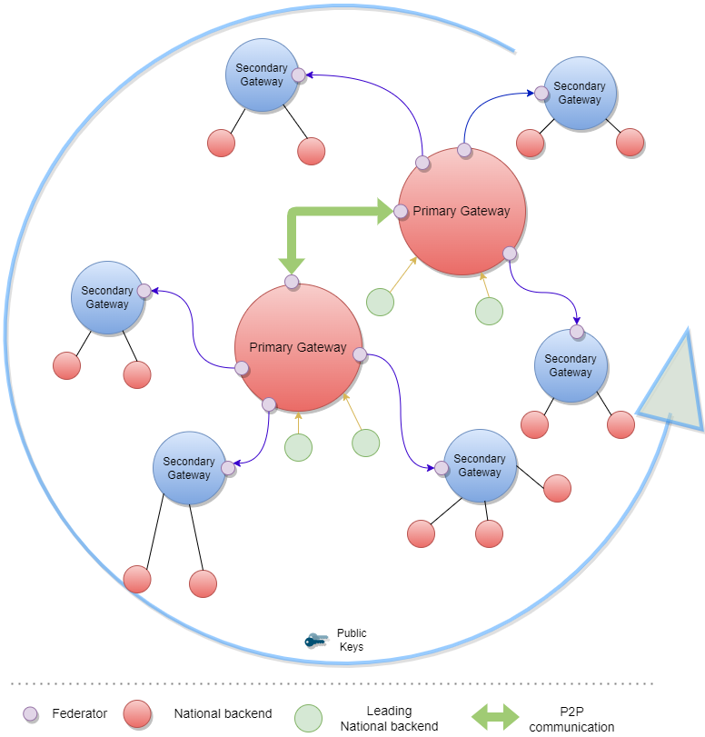
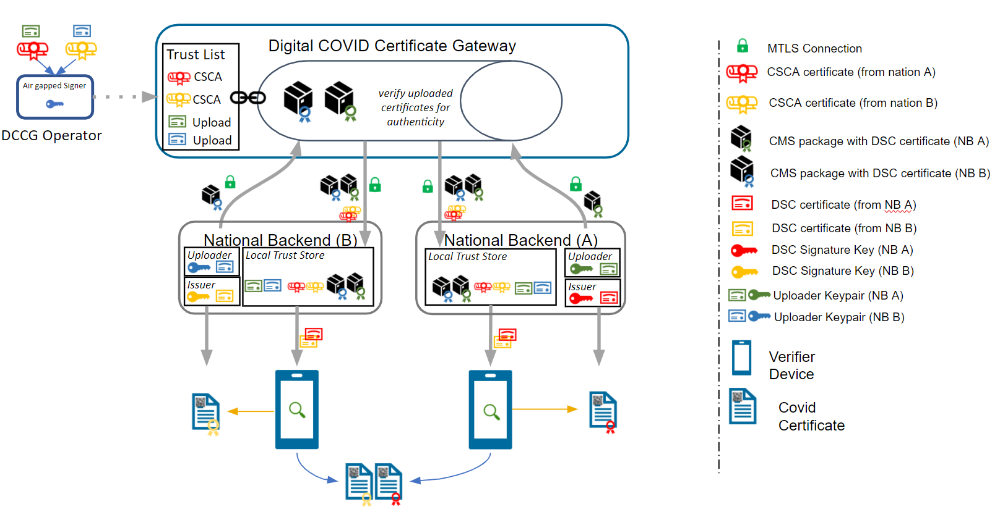

Машинный перевод — не проверен человеком
Эта страница переведена автоматически. Ни один человек не проверял и не утверждал этот перевод, поэтому он может содержать ошибки. Авторитетной является только страница на языке оригинала. Читать оригинал (английский)
Machine translation — not reviewed by a person
This page was translated automatically. No person has reviewed or adjudicated this translation, and it may contain errors. The source-language page is the authoritative text. Read the original (English)
Терминология
Эти концепции и следующая таблица содержат сокращения и терминологию, используемые в настоящем документе.
| Термин | Описание |
|---|---|
| DCC | Цифровой сертификат COVID-19 (Digital COVID-19 Certificate). |
| DDCC | Цифровая документация сертификатов COVID-19 (Digital Documentation COVID-19 Certificate). |
| DCC Gateway | Веб-приложение REST для обмена сертификатами подписантов документов, наборами значений DCC, бизнес-правилами DCC и списками отзыва для целей проверки DCC между национальными бэкендами подключённых государств. |
| CMS | Cryptographic Message Syntax (синтаксис криптографических сообщений) согласно RFC5652. Этот синтаксис используется для цифровой подписи, вычисления дайджеста, аутентификации или шифрования произвольного содержимого сообщений. |
| JRC | Европейский объединённый исследовательский центр (European Joint Research Centre). |
| OG | Исходный шлюз (Origin Gateway). |
| CQL | Clinical Quality Language (язык клинического качества). |
Введение
Настоящая архитектурная спецификация предоставляет средства для создания федеративной сети доверия для использования с медицинскими записями, например в рамках технических спецификаций и руководящих документов по внедрению Цифровой документации сертификатов COVID-19 (DDCC) ВОЗ. Она основана на предположении, что участники сети доверия могут создавать собственные независимые национальные сети доверия, участвовать в региональной сети доверия или пожелать участвовать в глобальной федеративной сети доверия. Кроме того, участники сети доверия могут пожелать, чтобы эти сети доверия были совместимы для внутренних и межъюрисдикционных вариантов использования. Хотя конкретные вопросы управления и политики, которые необходимо учитывать при создании таких совместимых сетей доверия, выходят за рамки настоящего документа, предполагается, что техническая архитектура, описанная в настоящем документе, будет поддерживать внутриюрисдикционные и межъюрисдикционные политики участников сети доверия.
Спецификации Шлюза сети доверия (TNG) в настоящем документе предназначены для поддержки спецификации DDCC, которая служит связующей/рамочной спецификацией для различных медицинских записей, таких как цифровые сертификаты COVID (например, EU DCC, SMART Health Cards, DIVOC и ИКАО (ICAO)). Настоящая спецификация основана на EU Digital Covid Certificate Gateway и расширяет его в нескольких важных направлениях:
- обеспечивая федерацию и одноранговый обмен информацией между шлюзами;
- поддерживая доступ к содержимому метаданных (например, наборам значений/кодировкам, бизнес-правилам) с явным соблюдением спецификации HL7 FHIR;
- предоставляя явные средства отзыва цифровых сертификатов COVID; и
- обеспечивая (необязательную) поддержку рабочих процессов онлайн-проверки и валидации.
В текущей системе DCC централизованный шлюз играет ключевую роль в установлении доверия между всеми подключёнными участниками сети доверия. Операторы шлюза следуют хорошо задокументированному процессу установления идентичности и подключения якоря доверия каждого участника сети доверия. TNG развивает эту систему, позволяя другим организациям создавать шлюзы доверия, что даёт возможность сформировать федеративную сеть шлюзов доверия, поддерживающую все основные сертификаты-удостоверения COVID-19.
Доверенная сторона и национальный бэкенд
Текущая концепция шлюза ориентирована на установление доверия между «национальными бэкендами» (“National Backends”), т. е. системами, эксплуатируемыми национальным органом здравоохранения или принадлежащими ему. Это может быть скрипт, полностью автоматизированное решение или ручной процесс, который способен доверенным образом подключаться к шлюзу и выполнять загрузку и выгрузку содержимого. Какие конкретные решения стоят за этим, выходит за рамки самого шлюза. В контексте DDCC термин «национальный бэкенд» (“National Backend”) сформулирован слишком узко, поскольку к шлюзу в сети доверия могут подключаться со своими системами публикации и другие стороны. Поэтому в данном контексте термин «национальный бэкенд» (“national backend”) следует понимать скорее как «доверенную сторону» (“Trusted Party”), т. е. участника, получившего доступ к доверенному шлюзу. Доверенный шлюз или федератор в свою очередь также выступает в роли «доверенной стороны» (“Trusted Party”) по отношению к другим шлюзам.
Концепция проектирования шлюза
В настоящее время EU DCC Gateway представляет собой единую централизованную систему, которая устанавливает доверие между участниками DCC и обеспечивает совместное использование бизнес-правил, наборов значений и списков отзыва. Если в другом регионе мира будет создан такой шлюз, в архитектуре на данный момент нет способа обмениваться этими доверенными данными между двумя шлюзами. В новой архитектуре в контексте DDCC несколько шлюзов могут быть соединены друг с другом и совместно использовать доверенные данные. В долгосрочной перспективе эта архитектура позволит создавать группы и в конечном итоге сформировать федерацию. Такая архитектура может быть применима и представлять интерес для сторон, не являющихся органами власти, например авиакомпаний, которым нужна копия содержимого шлюза только для чтения. Этого можно добиться, подключив авиакомпанию к шлюзу, специально настроенному для этой цели и соединённому с официальным шлюзом. Для достижения этой цели архитектура должна поддерживать несколько режимов работы, например Primary-Secondary (основной — вторичный). Как упоминалось выше, текущая реализация EU DCCG — это единая централизованная система, служащая узлом для хранения и управления необходимой информацией, собираемой от доверенных сторон.

В TNG следует реализовать данное расширение текущей реализации DCCG с целью создания сети из нескольких шлюзов для обмена материалом открытых ключей, связанным с медицинскими записями, наборами значений и бизнес-правилами между различными сторонами (органами власти, сторонами, не являющимися органами власти, коммерческими организациями). В этой архитектуре шлюз может подключаться к любому другому шлюзу путём ручной настройки списка соединений и доверительных отношений. Для управления соединениями и их поведением при загрузке вводится новый компонент — федератор. Федератор — это микросервис, который выступает автоматизированным клиентом загрузки между двумя шлюзами и выполняет все обязанности по обмену доверенными данными.

Основой этого обмена данными является функциональность текущей библиотеки коннектора, которая подключается к шлюзу и предоставляет потребителю наиболее необходимые функции. Эта библиотека дополняется возможностью подключения к нескольким шлюзам вместо одного.
Варианты использования
Двустороннее подключение
В варианте использования двустороннего подключения библиотека коннектора подключается в качестве доверенной стороны к нескольким шлюзам для загрузки/выгрузки содержимого. Это требует подключения к обоим шлюзам.

Одноранговый обмен
В варианте использования однорангового обмена два или более шлюза могут обмениваться данными в двустороннем режиме. Исходный и целевой шлюзы позволяют друг другу загружать данные. Все полученные в ходе обмена данные добавляются к существующим данным шлюза. Сюда могут входить данные сторонних шлюзов, если это разрешено соглашением об обмене данными между двумя шлюзами.

Обмен «основной — вторичный»
В варианте использования обмена «основной — вторичный» один или несколько шлюзов выступают в роли основного источника, а другая группа шлюзов — в роли вторичного источника. В этом режиме вторичные шлюзы загружают данные основного и добавляют их к собственному набору данных или заменяют им свой набор данных. Основной шлюз игнорирует данные вторичных, которые выступают лишь копиями основного шлюза для чтения. Ведущие национальные бэкенды могут подключаться к основному шлюзу и загружать данные в этот единственный основной шлюз.

Обмен из объединённых источников
В варианте использования обмена из объединённых источников шлюз загружает данные из нескольких шлюзов и добавляет их к собственному набору данных. В результате формируется объединённая коллекция.

Медиатор доверия
Содержимое шлюза может использоваться для установления доверия между участниками, которые связаны лишь слабо, например устройствами проверяющей стороны (Verifier Devices), которые известны доверенной стороне A, но не известны напрямую доверенной стороне B.

Для установления доверия между участниками может быть создан медиатор доверия, опирающийся на список доверия шлюза. Затем медиатор может использовать эту информацию, чтобы решить, следует ли устанавливать доверительные отношения. Например, перехватчик может проверить, была ли подпись JWT создана открытым ключом сертификата, подписанного подключённым SCA. Если SCA подключён и является доверенным, это доказывает, что подпись была создана тем, кому доверяет этот SCA. Тем самым доверие к этому участнику также обеспечивается.

Обзор архитектуры
Назначение Шлюза сети доверия — обеспечить защищённый и доверенный обмен данными в пределах сети доверия.
Данные, которыми обменивается TNG
Обмен метаданными
TNG предоставляет совместимые средства обмена ключевыми метаданными для поддержки цифровых сертификатов COVID-19 с использованием стандартов HL7 FHIR. Это включает, в частности:
- Наборы значений, которые рекомендуется совместно использовать с помощью транзакций, определённых в профиле IHE Sharing Value Sets and Concept Maps (SVCM), и которые включают следующие ресурсы:
- Ресурсы HL7 FHIR ValueSet для совместного использования кодировок и терминологий, на которые ссылаются различные спецификации цифровых сертификатов COVID (например, допустимые вакцины или тесты). - Ресурсы HL7 FHIR ConceptMap могут использоваться для сопоставления кодировок, определённых юрисдикцией, с кодировками спецификации DDCC.
- Бизнес-правила, которым рекомендуется соответствовать инфраструктуре Knowledge Artifact и Clinical Decision Support и включать следующие ресурсы:
- Ресурсы HL7 FHIR Library для совместного использования библиотек бизнес-правил, выраженных на языке Clinical Quality Language (CQL)
- Ресурсы HL7 FHIR PlanDefinition для указания того, какое бизнес-правило следует выполнять в зависимости от соответствующих вариантов использования для валидации или преемственности медицинской помощи.
Чтобы абстрагировать эти требования, Шлюз сети доверия вводит новую функциональность под названием «доверенные ссылки» (“Trusted References”), которая позволяет шлюзу совместно использовать любые конечные точки сервисов без передачи самого содержимого. Для обеспечения обратной совместимости функции бизнес-правил и наборов значений DCC сохраняются в архитектуре, но могут быть отключены с помощью профилей. Явные конечные точки для бизнес-правил и наборов значений будут заменены доверенными ссылками, поскольку широкое разнообразие медицинского содержимого следует оставить реализациям серверов FHIR, а не реализации каждого сервиса в самом шлюзе.
Обмен открытыми ключами
TNG предоставляет способ совместного использования открытых ключей, применяемых для подписания цифровых сертификатов COVID, а также предоставления списков отозванных сертификатов открытых ключей.
Обмен ссылками
TNG обеспечивает функциональность для хранения защищённых и доверенных ресурсов (т. е. наборов значений FHIR или бизнес-правил), которая гарантирует, что все участники системы точно знают о важных источниках. Эти ссылки могут храниться в виде URL.
Обмен данными об эмитентах
Для некоторых типов удостоверений, например Verifiable Credentials, TNG необходим для обеспечения доверия к эмитентам этих удостоверений. Большинство удостоверений содержат идентификатор эмитента, например URL HTTP или DID с материалом открытого ключа для проверки этих удостоверений. Для предоставления доверенного списка таких эмитентов шлюз предоставляет функцию загрузки идентификаторов эмитентов.
Концепция решения
Для реализации архитектурной концепции существующий DCC Gateway будет дополнен микросервисом, реализующим компонент TNG Federator. Этот компонент федератора развёртывается рядом со шлюзом и обеспечивает взаимодействие с другими федераторами. Каждый федератор может загружать данные других компонентов. Выгрузка данных в другие федераторы не предусмотрена (каждый шлюз загружает данные через федератор). Доверенные потребители могут принять решение об использовании информации федерации и должны явно активировать эту функцию. Таким образом, федератор выступает в роли коннектора/синхронизатора шлюзов и поставщика интерфейса для доступа к федеративным данным.

Примечание: базовая архитектура DCC Gateway остаётся неизменной. Для поддержки федерации вводятся лишь обратно совместимые расширения.
Установление соединения со шлюзом
Спецификация DDCC предоставляет совместимые стандарты для обмена содержимым метаданных, таким как доверенные ссылки, доверенные сертификаты и сертификаты подписантов, с системами через Шлюз сети доверия. Эти метаданные управляются доверенными системами, которым потребуется соединение/проксирование или сервис-фасад для работы со Шлюзом сети доверия («медиатор TNG» (“TNG Mediator”)). Этот медиатор должен быть подключён к TNG и признан доверенным его оператором, прежде чем станет возможной загрузка или выгрузка содержимого. Технически это может быть скрипт, бэкенд-система или медиатор OpenHIM. Основные задачи такого программного обеспечения — установление соединения mTLS со шлюзом, подписание загружаемого содержимого (например, CMS — Cryptographic Message Syntax) и загрузка подписанных DSC, записей об отзыве или выпуск бизнес-правил. Процедуры, используемые в фоновом режиме, выходят за рамки настоящего документа. Могут применяться ручные процессы выпуска, автоматические решения или иные процессы, однако крайне важно обеспечить, чтобы доверенный канал и безопасность сертификатов, используемых для загрузки/соединения TLS, не были скомпрометированы.
Варианты организации моста к другим системам
Для подключения существующих систем (т. е. PKD или любых других систем, содержащих сертификаты PKI (например, ИКАО (ICAO)), бизнес-правила или наборы значений (например, серверы FHIR)) к TNG необходим инструмент-мост, преобразующий полученные записи исходной системы в формат HL7 FHIR / Rest API шлюза. Например, для переноса каталога открытых ключей на основе LDAP в шлюз можно настроить скрипт/медиатор, который извлекает DSC и автоматически загружает их в шлюз. Обратите внимание, что в этом сценарии для работы процесса все SCA должны быть подключены до загрузки.
В особых обстоятельствах, когда необходимы «массовые транзакции данных» или интенсивная синхронизация, может быть предусмотрена возможность настройки адаптера непосредственно поверх базы данных шлюза. Сам TNG поддерживает JDBC, что позволяет использовать и другие базы данных, кроме mysql. Например, если используется Cassandra, MongoDb или CouchDB и доступен драйвер JDBC, данные могут реплицироваться на несколько узлов.
Примечание: репликации баз данных имеют собственное поведение, и функциональность шлюза не может охватить каждую доступную базу данных. Поэтому функцию JDBC следует использовать только при необходимости и на свой страх и риск.
Структурные блоки
Шлюз сети доверия состоит из DCC Gateway, дополненного механизмами обратного вызова и дополнительными источниками списков доверия, нового компонента федератора с клиентом загрузки, API федерации, прокси-сервера для исходящих вызовов и интерфейса к маршрутам различных сервисов.

Модель доверия
Обзор
Модель доверия шлюза основана на управлении сертификатами PKI шлюза DCC Gateway. Все элементы, важные для безопасности, загружаются в подписанном формате CMS и защищаются различными видами сертификатов PKI, как определено правилами управления сертификатами PKI. Центральными элементами модели доверия являются SCA, защищающий сертификаты подписантов документов, и сообщения CMS, защищающие загружаемое содержимое.
SCA и DSC
Для подписания цифровых сертификатов COVID-19 выдающий орган создаёт сертификат подписанта документов (“DSC”). Каждый орган распространяет свои DSC среди проверяющих сторон, чтобы DSC можно было использовать для подтверждения действительности выданного сертификата. Для установления цепочки доверия между используемыми DSC и распространителями национальных списков доверия каждый DSC подписывается корневым удостоверяющим центром (“SCA”) для проверки подлинности самого DSC. По соображениям безопасности SCA объявляется физически изолированным (air gapped), а его открытая часть затем подключается к шлюзу. В ходе подключения SCA подписывается оператором шлюза, чтобы обеспечить доверие при первоначальной проверке. После подключения каждый входящий DSC может проверяться по доверенному SCA. Подпись оператора (выполненная DCCGTA) устанавливает доверие к различным сертификатам, таким как сертификат загрузчика и сертификат аутентификации TLS, как определено правилами управления сертификатами.

Использование CMS
Для поддержки различного содержимого в шлюзе с одинаковым уровнем безопасности модель доверия вводит CMS в качестве универсального контейнера для элементов, важных для безопасности. Формат CMS позволяет стандартизировать подписание и шифрование независимо от содержимого, для одного или нескольких получателей.

Расширение
Текущая модель доверия DCC Gateway поддерживает только подключение нескольких бэкендов и обмен содержимым между ними (см. ниже).

Для реализации архитектурной концепции модель доверия шлюза будет расширена, чтобы федератор мог поддерживать несколько якорей доверия. Для этого TNG Federator будет подключён к исходному шлюзу с сертификатами TNPTLS и TNPUP для доступа к содержимому шлюза. В целевом шлюзе настраивается якорь доверия исходного шлюза (подписанный оператором), чтобы содержимое источника признавалось действительным. При успешной проверке содержимое добавляется как подмножество к существующему содержимому шлюза. Подключённые национальные бэкенды затем могут загружать всю информацию, активировав опцию федерации, чтобы получать содержимое обоих шлюзов. Цепочку доверия можно проверить по якорю доверия подключённого шлюза и списку доверия подключённых якорей доверия.

Примечание: федератор выступает в качестве особого вида «национального бэкенда» (“National Backend”), поэтому все сертификаты, связанные с TNP, за исключением TNPUP, подключаются в обычном порядке.
«Сырые» открытые ключи
Модель доверия не поддерживает «сырые» открытые ключи по соображениям безопасности, особенно в случаях, когда:
Действительность «сырых» ключей не может быть проверена; «сырой» ключ не может быть проверен источником (например, корневым удостоверяющим центром); «сырые» ключи легко создавать и распространять, и ненадлежащее управление «открывает дверь» всем участникам сети доверия
Поэтому все «сырые» ключи должны быть преобразованы в оболочку сертификата x509, чтобы стать DSC в шлюзе, и этот сертификат должен быть подписан надлежащим образом подключённым SCA. Этот процесс не влияет на проверку сертификата COVID-19, если при загрузке (и в сертификате) применяется правильный KID.
Ограничение DSC
Для поддержки унаследованных систем или при любой необходимости разграничения в процессе проверки, например для правильных эмитентов или разграничения при вычислении KID, рекомендуется, чтобы DSC содержали следующие OID в поле расширенного назначения ключа (extended key usage):
| Поле | Значение | Описание |
|---|---|---|
| extendedKeyUsage | 1.3.6.1.4.1.1847.2021.1.1 | Для эмитентов сертификатов о тестировании |
| extendedKeyUsage | 1.3.6.1.4.1.1847.2021.1.2 | Для эмитентов сертификатов о вакцинации |
| extendedKeyUsage | 1.3.6.1.4.1.1847.2021.1.3 | Для эмитентов сертификатов о выздоровлении |
| extendedKeyUsage | 1.3.6.1.4.1.1847.2022.1.20 | Для «сырых» ключей DIVOC |
| extendedKeyUsage | 1.3.6.1.4.1.1847.2022.1.21 | Для «сырого» ключа SHC |
| extendedKeyUsage | 1.3.6.1.4.1.1847.2022.1.22 | Для «сырых» ключей в DCC (вычислять kid только по открытому ключу) |
Использование OID может ограничивать область применения сертификата подписанта документов в процессе проверки (если это поддерживается приложением проверяющей стороны). Например, мошеннические сертификаты о вакцинации, выданные центрами тестирования, не будут действительными, поскольку они подписаны DSC, ограниченным эмитентами сертификатов о результатах тестирования.
OID также может использоваться как индикатор при проверке, поскольку он может указывать, что данный сертификат является оболочкой для «сырых» ключей.
Могут существовать и определяться другие ограничения DSC по мере появления новых вариантов использования.
Примечание: все варианты расширенного назначения ключа (extendedKey usage) следует хорошо документировать на github во избежание путаницы в отношении их использования. Каждый необходимый атрибут следует настраивать так, чтобы наилучшим образом поддерживать процесс проверки.
Архитектура федератора
Обзор
Федератор спроектирован как новый подкомпонент, который может размещаться как микросервис или внутри шлюза в рамках одного развёртывания. Это поведение настраивается при установке. В целом федератор обеспечивает автоматическую загрузку содержимого шлюза или федерации. Загруженное содержимое хранится в базе данных шлюза для предоставления его через конечные точки федерации шлюза. Затем доверенные стороны могут загружать федеративные данные с этих конечных точек.
Представление «чёрный ящик»

Представление «белый ящик»

Модель данных
####### Конфигурация федератора
Примечание: каждый маршрут федерации шлюза должен настраиваться вручную для явной загрузки, чтобы избежать недоразумений при конфигурировании. Это важно по соображениям безопасности. Все якоря доверия должны быть подключены, иначе содержимое отфильтровывается.
| Поле | Тип | Описание |
|---|---|---|
| ID | int | Уникальный идентификатор строки таблицы |
| GatewayId | GUID | Уникальный идентификатор другого исходного шлюза. |
| GatewayEndpoint | Varchar | URL другого шлюза. |
| GatewayKid | Varchar | KID клиентского сертификата исходного шлюза, используемого для подключения к другому шлюзу. (TNG TLS FED |
| GatewayPublicKey | Varchar | Открытый ключ ECDSA подписи шлюза |
| AuthenticationKID | Массив Varchar | KID подключённых TNGTLS GW другого шлюза. |
| TrustAnchorKIDs | Массив Varchar | KID подключённого якоря доверия (TNG TA) |
| DownloadTarget | String | FEDERATION или GATEWAYONLY |
| Режим | int | Перечисление для режима загрузки: APPEND или OVERRIDE. Режим APPEND добавляет загруженные данные к существующему набору данных (существующие данные федерации будут заменены). OVERRIDE удаляет существующие наборы данных (за исключением собственных TNPTLS, якорей доверия и конфигураций федерации) |
| Подпись | Varchar | Подпись якоря доверия |
####### Планировщик загрузки
| Поле | Тип | Описание |
|---|---|---|
| GatewayID | GUID | Уникальный идентификатор шлюза |
| DownloadInterval | int | Интервал загрузки |
| LastDownload | TimeStamp | Время последней загрузки |
| Повтор | boolean | Флаг повтора |
| Сообщение | String | Сообщение федератора |
| Неудачные повторные попытки | int | Количество неудачных повторных попыток |
Конечные точки
Для использования федеративных данных шлюз будет дополнен конечными точками федерации, которые являются модифицированными вариантами общих маршрутов GET. При использовании этих новых конечных точек общее содержимое возвращается в изменённом виде:
| Метод | Используется в федераторе | Используется в медиаторе | Маршрут | Модификация/поведение |
|---|---|---|---|---|
| GET | X | X | /trustlist/certificates | Возвращает список доверенных сертификатов. Список может быть отфильтрован с помощью необязательных параметров запроса. По соображениям совместимости с унаследованными системами все сертификаты подписантов, внесённые в группу сертификатов “DSC” (если профиль включён). Все прочие сертификаты следует предоставлять через параметр запроса. |
| GET | X | X | /trustlist/issuers | Возвращает список доверенных эмитентов. Список может быть отфильтрован с помощью необязательных параметров запроса. |
| GET | X | X | /trustlist/signatures | Возвращает список подписей для существующих списков доверия. |
| GET | X | X | /trustlist/references | Возвращает список доверенных ссылок. Список может быть отфильтрован с помощью необязательных параметров запроса. |
Примечание: всем маршрутам следует фильтровать предоставляемое содержимое по хешу, чтобы избежать повторной передачи одного и того же содержимого. При некоторых обстоятельствах две разные федерации могут получить от одной TP одинаковое содержимое.
Общие параметры запроса
Каждый маршрут, предоставляющий федеративные данные, должен поддерживать параметр запроса для фильтрации федераций с использованием массива:
/URL?federationId=id1,id2,id3&Domain=DCC&ResourceType=...
Если установлен режим “GATEWAYONLY”, его необходимо использовать для запроса только по настроенному идентификатору шлюза.
Формат федерации
В формат федеративных данных всегда следует включать оболочку федерации со сведениями о federationID, домене (Domain) и типе ресурса.
Процесс загрузки
Для федерации данных нескольких шлюзов вводится процесс загрузки, с помощью которого следует гарантировать, что в локальный шлюз загружаются только доверенные данные. В данном контексте доверенные данные означают, что оператор локального шлюза полностью контролирует, какие федеративные данные принимаются, а какие нет. Для достижения этой цели оператор локального шлюза должен явно подключить все удалённые федераторы, а также якоря доверия тех данных, которые могут быть приняты. Это необходимо, поскольку каждый удалённый федератор может предоставлять данные нескольких других шлюзов (которым доверяет оператор исходного шлюза), но это не обязательно означает, что эти данные автоматически являются доверенными и для оператора локального шлюза (неявных доверительных отношений необходимо избегать). Поэтому в ходе процесса загрузки следует выполнять проверку, пропускающую все данные, которым локальный оператор явно не доверяет. Этого можно достичь путём внесения нескольких якорей доверия в белый список и перекрёстной проверки по сертификатам TNPUP. Если цепочка доверия установлена таким образом, каждое содержимое может быть загружено, проверено и помещено в хранилище. Весь процесс загрузки следует механизму дельта-загрузки: ежедневно загружается всё содержимое, а в течение дня — только изменения (дельты). Для сети доверия это означает, что сертификат шаг за шагом «всплывает» от исходного шлюза ко всем остальным шлюзам. В связи с таким поведением необходимо учитывать, что между созданием пары ключей и выдачей с её помощью первых сертификатов проходит около одного дня.

Модификации и изменения архитектуры
Модификации EU DCC Gateway (спецификация)
Таблицы данных
Таблица доверенных сторон (см. главу 4.2.3.1, EU DCC Gateway) дополняется новым типом сертификата “TRUSTANCHOR”; в вызове API для списков доверия появляются эти новые типы. Для разграничения федератора и обычной доверенной стороны вводится тип доверенного элемента (“TP”, “FEDERATOR”,”GATEWAY”). Для разграничения различных доменов сертификатов в таблицу также добавляется новый столбец ‘‘DOMAIN”, со значением по умолчанию “DCC’’. В настоящее время другими значениями могут быть “ICAO”, “DIVOC” и “SHC”. Домен отображается в маршрутах списков доверия.
Каждая таблица данных (SignerInformation, Trusted Issuer, Trusted Reference и т. д.) получает новые столбцы для UUID, идентификатора федерации и objectVersion. Первичные ключи изменяются на ID + идентификатор федерации для гарантии уникальности.
Загрузка SignerInformation
Конечные точки информации о подписантах должны настраиваться с помощью профиля для включения и отключения маршрутов. Это необходимо для сохранения обратной совместимости с EU DCC Gateway. В контексте DDCC эти маршруты деактивированы.
Загрузка доверенных сертификатов
Для поддержки дополнительных вариантов использования шлюз будет модифицирован за счёт конечных точек, позволяющих загружать сертификаты, подписанные SCA участника сети доверия. Конечная точка загрузки работает аналогично конечной точке загрузки информации о подписантах, с той разницей, что загрузка содержит больше дополнительной информации о сертификате. Конкретный шаблон этой дополнительной информации должен быть определён схемой. Загрузка сертификата должна поддерживать выбор kid, поскольку другие стандарты определяют статические kid или выбирают их иначе, чем DCC. Если kid не указан, применяется стандартное для DCC вычисление по первым 8 байтам хеша SHA256.
Проверка работоспособности
Для мониторинга состояния шлюза вводится проверка работоспособности. Новый маршрут возвращает 200, если шлюз запущен и работает. Когда шлюз находится на обслуживании, маршруты должны возвращать 204. Все прочие коды возврата указывают на ошибку.
Профили маршрутов
Маршруты для POST, PUT и DELETE будут изменены с помощью профилей, чтобы сделать их настраиваемыми. Это позволяет отключать загрузку данных, что особенно важно для вариантов использования «основной — вторичный»/объединённых источников. При такой конфигурации подключать сертификаты TNPUP не требуется.
Конечные точки наборов значений и бизнес-правил
Конечные точки ValueSet и бизнес-правил должны настраиваться посредством конфигурации профилей для их включения/отключения.
Для бизнес-правил вводится новая конечная точка, возвращающая отдельные объекты по идентификатору бизнес-правила (/rules/{TrustNetworkPartcipant}/{ruleId}}.
Примечание: этот новый маршрут вводится для создания пути миграции к доверенным ссылкам. В стандартном режиме EU DCC он не влияет на обратную совместимость.
Доверенные ссылки
Доверенные ссылки — это URL, загружаемые участниками сети доверия для распространения сведений о своих конечных точках сервисов, касающихся наборов значений, бизнес-правил и другого содержимого для обеспечения совместимости. В рамках доверенных ссылок допускаются только публичные методы GET. Авторизация при необходимости должна обеспечиваться медиаторами доверия.
| Поле | Необязательно | Тип | Описание | ||
|---|---|---|---|---|---|
| UUID | Нет | String | UUID объекта. | ||
| URL | Нет | String | Может быть HTTP(s) | ||
| Тип | Нет | String | FHIR | DCC… | |
| Версия | Нет | String | Любая строка версии. | ||
| Страна | Нет | String | Участник сети доверия, к которому относится URL. | ||
| Сервис | Нет | String | например, ValueSet, PlanDefinition и т. п. | ||
| Отпечаток (Thumbprint) | Нет | String | Хеш SHA256 содержимого, на которое указывает ссылка | ||
| Имя | Нет | String | Имя сервиса | ||
| SSLPublicKey | Нет | String | Сертификат SSL конечной точки (если применимо). | ||
| Content-Type | Нет | String | MIME-тип содержимого | ||
| SignatureType | Нет | String | NONE | JWS | CMS |
Доверенный эмитент
В настоящее время можно подключать SCA в качестве доверенной ссылки эмитента (Issuer Trust Reference) для DSC, что затрудняет использование вне мира PKI. Другие типы удостоверений, например Verifiable Credentials, используют DID или иные идентификаторы эмитентов, которые не обязательно связаны с каким-либо SCA, но за которыми стоит криптографический материал, например источники JWK и т. п. Для поддержки таких эмитентов и их удостоверений шлюз будет дополнен интерфейсом доверенных эмитентов, позволяющим получать такие доверенные идентификаторы. Все эти доверенные эмитенты должны подключаться так же, как SCA и все прочие сертификаты.
Доверенная запись эмитента, которая может быть подключена, определяется следующим образом:
| Поле | Необязательно | Тип | Описание |
|---|---|---|---|
| URL | Нет | String | Может быть HTTP(s) или URL DID. |
| Тип | Нет | String | HTTP или DID |
| Страна | Нет | String | Участник сети доверия, к которому относится URL. |
| Отпечаток (Thumbprint) | Да | String | Хеш SHA256 содержимого, на которое указывает ссылка (если применимо) |
| Имя | Нет | String | Имя сервиса |
| SSLPublicKey | Да | String | Сертификат SSL конечной точки (если применимо). |
| KeyStorageType | Да | String | Тип хранилища ключей, например JWKS, DIDDocument, JKS и т. п. |
Запись будет подключена в шлюзе и подписана якорем доверия.
Примечание: если URL в этой таблице не разрешается, все необязательные поля могут быть пустыми. Это менее надёжно, и такой ситуации следует избегать при эксплуатации.
Развёртывание
####### Ограничения. TNG может эксплуатироваться за сетевым компонентом (балансировщиком нагрузки, API Gateway , обратным прокси-сервером и т. п.), который выполняет аутентификацию по клиентскому сертификату и извлечение атрибутов клиентского сертификата из соединения TLS. После разгрузки TLS (TLS Offloading) от инфраструктуры зависит, нужно ли устанавливать внутреннюю защищённую сеть TLS. Например, если TNG развёрнут в распределённой сервисной сетке (service mesh), рекомендуется использовать каналы, защищённые TLS, например сервисные сетки на основе SPIFFE/SPIRE. Какой режим лучше подходит для развёртывания, зависит от инфраструктуры оператора. Сам шлюз также может работать в режиме SSL Passthrough.
Все прочие компоненты, например прокси-серверы, должны быть согласованы по настраиваемым параметрам во избежание HTTP Smuggling или аналогичных уязвимостей.
####### Настройка Kubernetes

Модификации Шлюза сети доверия ВОЗ
В последней версии архитектуры TNG1 были внесены изменения для доверенных эмитентов и доверенных сертификатов, позволяющие использовать различные типы технологий при проверке доверия. Это может быть либо X509, либо DID согласно спецификации DID Core [w3c-did-core]. В ходе последних итераций разработки и согласования спецификации был выявлен ряд ключевых моментов, которые должны дополнительно поддерживаться шлюзом:
- Встроенная поддержка DID для списков доверия шлюза (формат документа DID) (необязательно)
- Децентрализованный обмен документами DID для предоставления их проверяющим сторонам
- Согласованный с ВОЗ процесс подключения правомочных участников сети доверия
В этом разделе описаны эти изменения.
Технические изменения
Для поддержки функции документов DID в соответствии со спецификацией доверия шлюз будет дополнен генератором документов DID и возможностью подписывать эти документы DID. Это включает способ генерации ключей подписания через хранилище секретов (vault) и регистрации открытого ключа подписи в децентрализованном реестре ключей.

Архитектура и развёртывание в Azure
Публичное облако Microsoft Azure является целевой операционной средой для Шлюза сети доверия, размещаемого ВОЗ. TNG будет эксплуатироваться в Azure Kubernetes Service (AKS) и использовать Azure CDN для распространения открытых ключей посредством документов DID.

Концепция процесса подключения
Секретариат Глобальной сети сертификации в области цифрового здравоохранения ВОЗ отвечает за управление заявками на подключение правомочных участников сети доверия для их подключения к сети доверия в качестве доверенной стороны.
-
../TNG — Шлюз сети доверия (Trust Network Gateway), ранее называвшийся шлюзом цифровой документации сертификатов COVID (Digital Documentation of Covid Certificates (DDCC) Gateway) ↩